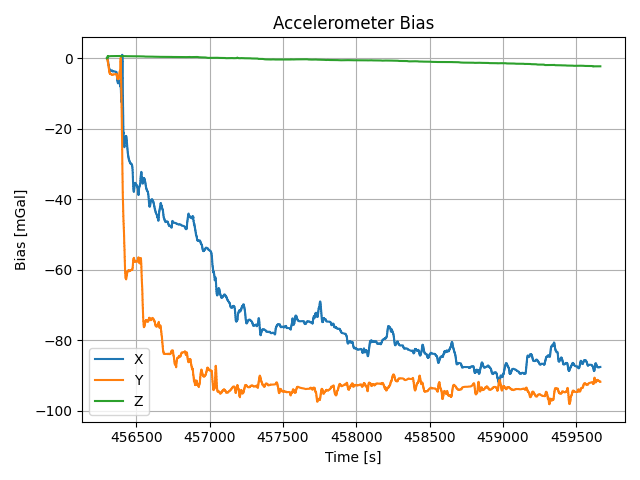
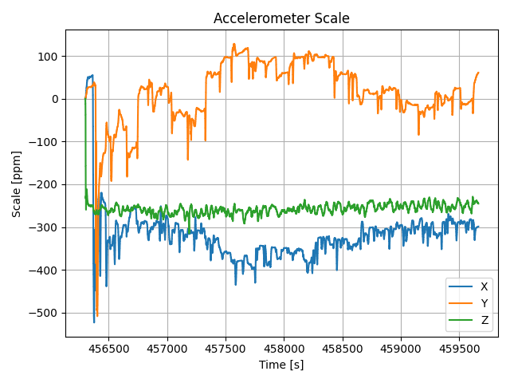
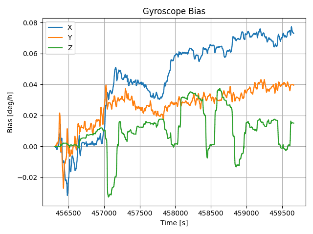
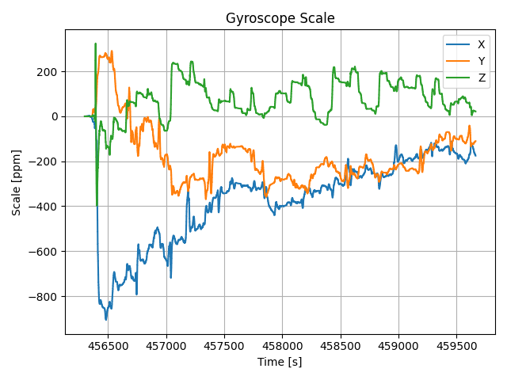
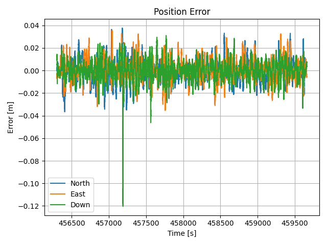
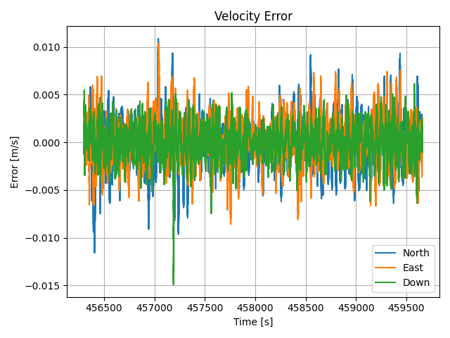
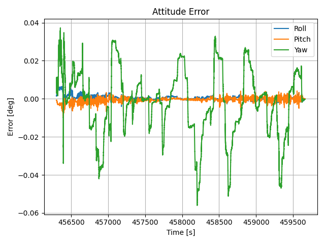
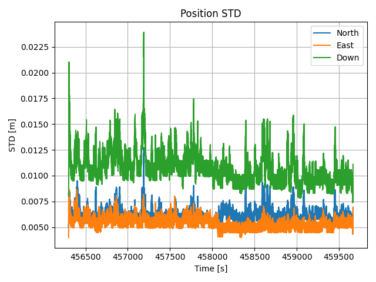
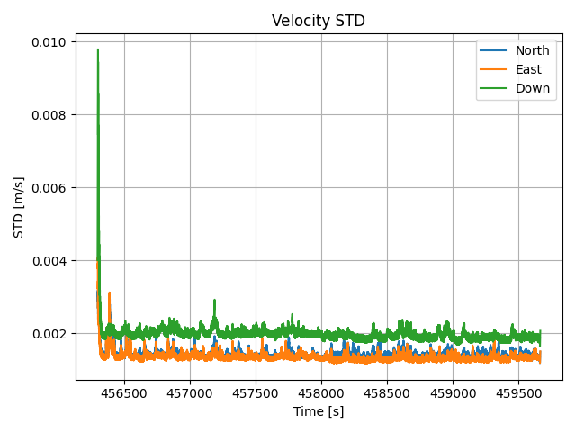
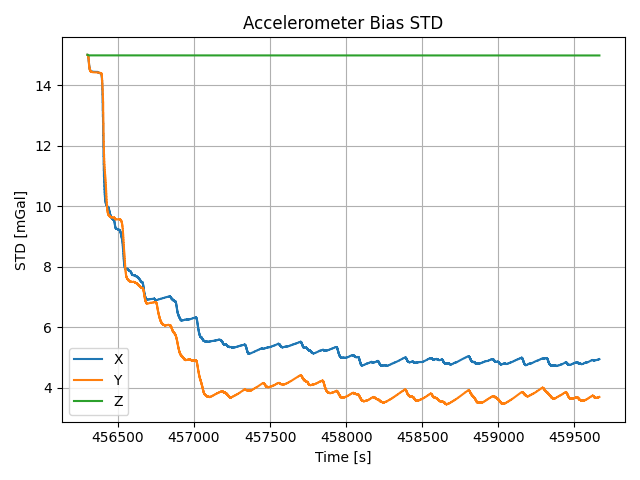
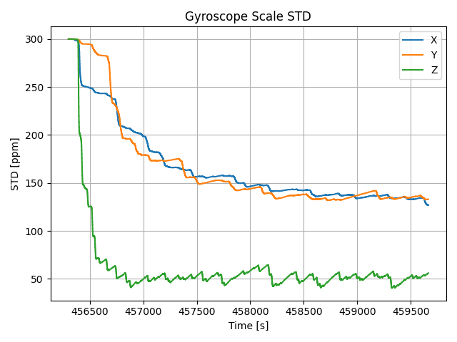
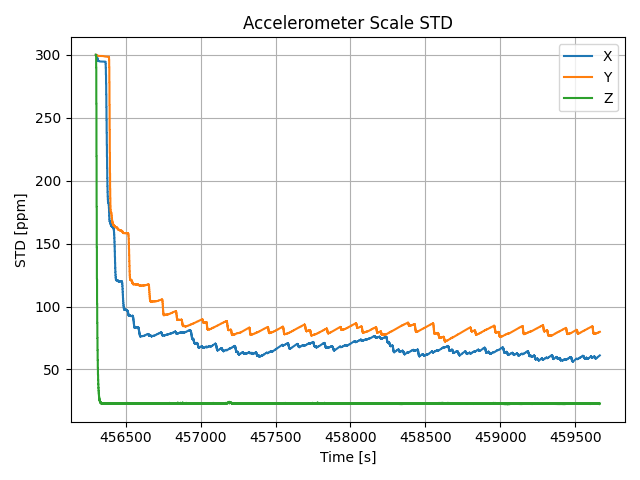
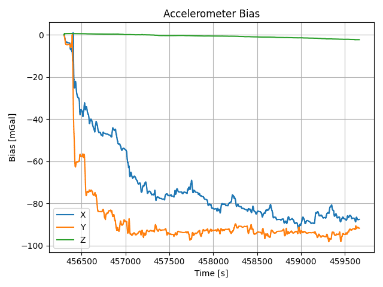
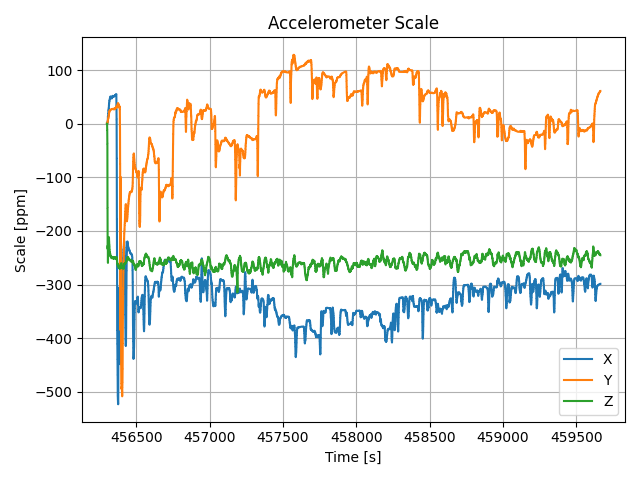
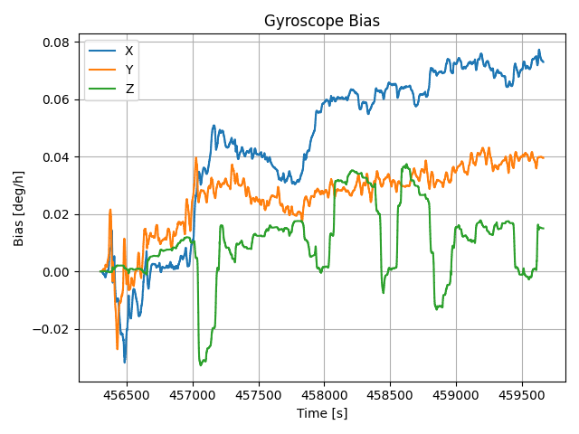
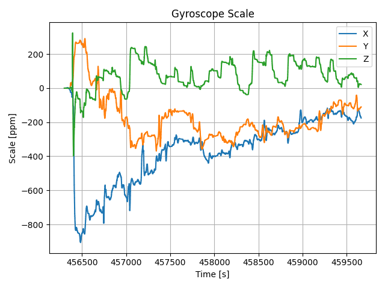
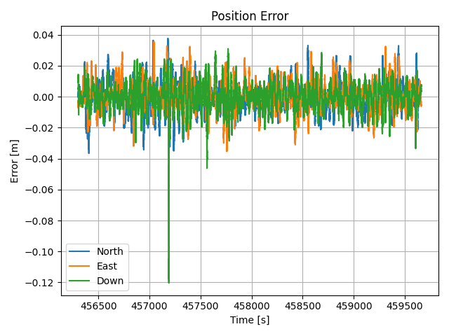
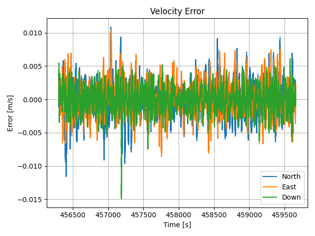
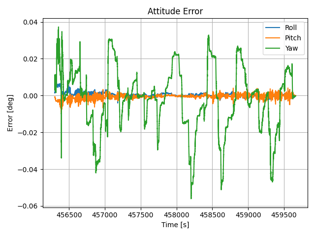
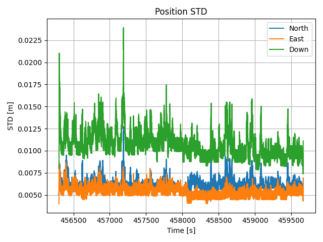
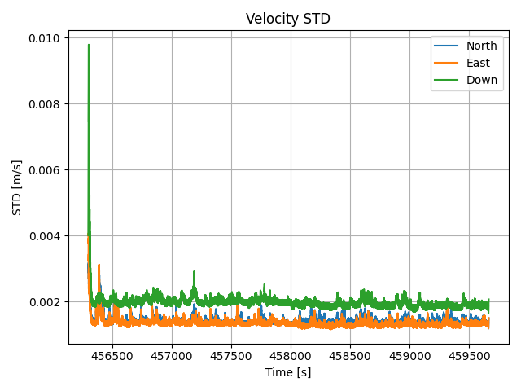
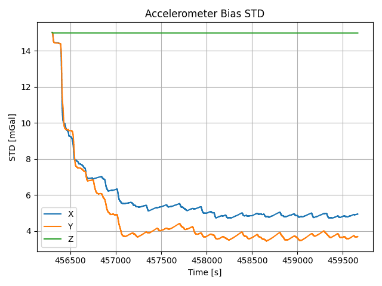
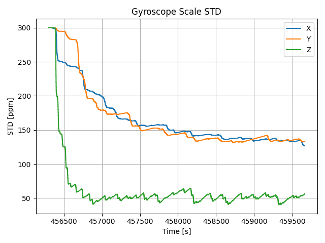
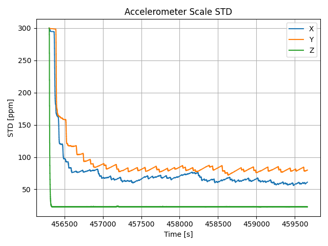
KF-GINS 绘图扩展
import numpy as np
import math as m
import matplotlib.pyplot as plt
# WGS84参数
WGS84_RA = 6378137.0
WGS84_E1 = 0.00669437999013
WGS84_WIE = 7.2921151467e-5
D2R = np.pi / 180.0
R2D = 180.0 / np.pi
# 计算子午圈半径和卯酉圈半径
# 输入参数: lat(纬度)[rad]
def radiusmn(lat):
tmp = np.square(m.sin(lat))
tmp = 1 - WGS84_E1 * tmp
sqrttmp = np.sqrt(tmp)
radm = WGS84_RA * (1 - WGS84_E1) / (sqrttmp * tmp)
radn = WGS84_RA / sqrttmp
return radm, radn
# 地理坐标系增量转成n系下坐标增量
# 参数: rm, rn 子午圈半径和卯酉圈半径; pos当前位置地理位置[rad, rad, m], drad(地理坐标系相对增量)[rad, rad, m]
# @param: return: dm, n系下增量
def drad2dm(rm, rn, pos, drad):
dm = np.zeros([3, 1])
dm[0] = drad[0] * (rm + pos[2])
dm[1] = drad[1] * (rn + pos[2]) * m.cos(pos[0])
dm[2] = -drad[2]
return dm
def plotNavresult(navresult_filepath):
# np.loadtxt() 默认读取文本文件中的数值数据，每一行的数据被解析成一个数组的行。
navresult = np.loadtxt(navresult_filepath)
# 小范围内将位置转到第一个位置确定的n系
pos = np.zeros([len(navresult), 4])
navresult[:, 2:4] = navresult[:, 2:4] * D2R
pos[:, 0] = navresult[:, 1]
blh_station = navresult[0, 2:5]
rm, rn = radiusmn(blh_station[0])
for i in range(len(pos)):
delta_blh = navresult[i, 2:5] - navresult[0, 2:5]
pos[i, 1:4] = drad2dm(rm, rn, blh_station, delta_blh).reshape(1, 3)
print('plotting estimated navigation result!')
# 绘图
plt.figure('horizontal position')
plt.plot(pos[:, 2], pos[:, 1])
plt.axis('equal')
plt.xlabel('East [m]')
plt.ylabel('North [m]')
plt.title('Horizontal Position')
plt.grid()
plt.tight_layout()
plt.figure('height')
plt.plot(navresult[:, 1], navresult[:, 4])
plt.xlabel('Time [s]')
plt.ylabel('Height [m]')
plt.title('Height')
plt.grid()
plt.tight_layout()
plt.figure()
plt.plot(navresult[:, 1], navresult[:, 5:8])
plt.legend(['North', 'East', 'Down'])
plt.xlabel('Time [s]')
plt.ylabel('Velocity [m/s]')
plt.title('Velocity')
plt.grid()
plt.tight_layout()
plt.figure()
plt.plot(navresult[:, 1], navresult[:, 8:11])
plt.legend(['Roll', 'Pitch', 'Yaw'])
plt.xlabel('Time [s]')
plt.ylabel('Angle [deg]')
plt.title('Attitude')
plt.grid()
plt.tight_layout()
plt.show()
def plotIMUerror(imuerr_filepath):
imuerr = np.loadtxt(imuerr_filepath)
print('plotting estimated IMU error!')
plt.figure('gyro bias')
plt.plot(imuerr[:, 0], imuerr[:, 1:4])
plt.legend(['X', 'Y', 'Z'])
plt.xlabel('Time [s]')
plt.ylabel('Bias [deg/h]')
plt.title('Gyroscope Bias')
plt.grid()
plt.tight_layout()
plt.figure('accel bias')
plt.plot(imuerr[:, 0], imuerr[:, 4:7])
plt.legend(['X', 'Y', 'Z'])
plt.xlabel('Time [s]')
plt.ylabel('Bias [mGal]')
plt.title('Accelerometer Bias')
plt.grid()
plt.tight_layout()
plt.figure('gyro scale')
plt.plot(imuerr[:, 0], imuerr[:, 7:10])
plt.legend(['X', 'Y', 'Z'])
plt.xlabel('Time [s]')
plt.ylabel('Scale [ppm]')
plt.title('Gyroscope Scale')
plt.grid()
plt.tight_layout()
plt.figure('accel scale')
plt.plot(imuerr[:, 0], imuerr[:, 10:13])
plt.legend(['X', 'Y', 'Z'])
plt.xlabel('Time [s]')
plt.ylabel('Scale [ppm]')
plt.title('Accelerometer Scale')
plt.grid()
plt.tight_layout()
plt.show()
def plotNavError(navresult_filepath, refresult_filepath):
naverror = calcNavresultError(navresult_filepath, refresult_filepath)
print('calculate mavigtion result error finished!')
print('plotting navigation error!')
# 绘制误差曲线
plt.figure('position error')
plt.plot(naverror[:, 1], naverror[:, 2:5])
plt.legend(['North', 'East', 'Down'])
plt.xlabel('Time [s]')
plt.ylabel('Error [m]')
plt.title('Position Error')
plt.grid()
plt.tight_layout()
plt.figure('velocity error')
plt.plot(naverror[:, 1], naverror[:, 5:8])
plt.legend(['North', 'East', 'Down'])
plt.xlabel('Time [s]')
plt.ylabel('Error [m/s]')
plt.title('Velocity Error')
plt.grid()
plt.tight_layout()
plt.figure('attitude error')
plt.plot(naverror[:, 1], naverror[:, 8:11])
plt.legend(['Roll', 'Pitch', 'Yaw'])
plt.xlabel('Time [s]')
plt.ylabel('Error [deg]')
plt.title('Attitude Error')
plt.grid()
plt.tight_layout()
plt.show()
def plotSTD(std_filepath):
std = np.loadtxt(std_filepath)
print('plotting estimated STD!')
plt.figure('position std')
plt.plot(std[:, 0], std[:, 1:4])
plt.legend(['North', 'East', 'Down'])
plt.xlabel('Time [s]')
plt.ylabel('STD [m]')
plt.title('Position STD')
plt.grid()
plt.tight_layout()
plt.figure('velocity std')
plt.plot(std[:, 0], std[:, 4:7])
plt.legend(['North', 'East', 'Down'])
plt.xlabel('Time [s]')
plt.ylabel('STD [m/s]')
plt.title('Velocity STD')
plt.grid()
plt.tight_layout()
plt.figure('attitude std')
plt.plot(std[:, 0], std[:, 7:10])
plt.legend(['Roll', 'Pitch', 'Yaw'])
plt.xlabel('Time [s]')
plt.ylabel('STD [deg]')
plt.title('Attitude STD')
plt.grid()
plt.tight_layout()
plt.figure('gyrobias std')
plt.plot(std[:, 0], std[:, 10:13])
plt.legend(['X', 'Y', 'Z'])
plt.xlabel('Time [s]')
plt.ylabel('STD [deg/h]')
plt.title('Gyroscope Bias STD')
plt.grid()
plt.tight_layout()
plt.figure('accelbias std')
plt.plot(std[:, 0], std[:, 13:16])
plt.legend(['X', 'Y', 'Z'])
plt.xlabel('Time [s]')
plt.ylabel('STD [mGal]')
plt.title('Accelerometer Bias STD')
plt.grid()
plt.tight_layout()
plt.figure('gyroscale std')
plt.plot(std[:, 0], std[:, 16:19])
plt.legend(['X', 'Y', 'Z'])
plt.xlabel('Time [s]')
plt.ylabel('STD [ppm]')
plt.title('Gyroscope Scale STD')
plt.grid()
plt.tight_layout()
plt.figure('accelscale std')
plt.plot(std[:, 0], std[:, 19:22])
plt.legend(['X', 'Y', 'Z'])
plt.xlabel('Time [s]')
plt.ylabel('STD [ppm]')
plt.title('Accelerometer Scale STD')
plt.grid()
plt.tight_layout()
plt.show()
def calcNavresultError(navresult_filepath, refresult_filepath):
navresult = np.loadtxt(navresult_filepath)
refresult = np.loadtxt(refresult_filepath)
# 航向角平滑
for i in range(1, len(navresult)):
if navresult[i, 10] - navresult[i - 1, 10] < -180:
navresult[i:, 10] = navresult[i:, 10] + 360
if navresult[i, 10] - navresult[i - 1, 10] > 180:
navresult[i:, 10] = navresult[i:, 10] - 360
for i in range(1, len(refresult)):
if refresult[i, 10] - refresult[i - 1, 10] < -180:
refresult[i:, 10] = refresult[i:, 10] + 360
if refresult[i, 10] - refresult[i - 1, 10] > 180:
refresult[i:, 10] = refresult[i:, 10] - 360
# 找到数据重合部分，参考结果内插到测试结果
start_time = refresult[0, 1] if refresult[0, 1] >= navresult [0, 1] else navresult [0, 1]
end_time = refresult[-1, 1] if refresult[-1, 1] <= navresult [-1, 1] else navresult [-1, 1]
start_index = np.argwhere(navresult[:, 1] >= start_time)[0, 0]
end_index = np.argwhere(navresult[:, 1] <= end_time)[-1, 0]
navresult = navresult[start_index:end_index, :]
navresult[:, 2:4] = navresult[:, 2:4] * D2R
refresult[:, 2:4] = refresult[:, 2:4] * D2R
refinter = np.zeros_like(navresult)
refinter[:, 1] = navresult[:, 1]
for col in range(2, 11):
refinter[:, col] = np.interp(navresult[:, 1], refresult[:, 1], refresult[:, col])
# 计算误差
naverror = np.zeros_like(navresult)
naverror[:, 1] = navresult[:, 1]
naverror[:, 2:11] = navresult[:, 2:11] - refinter[:, 2:11]
# 航向角误差处理
for i in range(len(naverror)):
if naverror[i, 10] > 180:
naverror[i, 10] -= 360
if naverror[i, 10] < -180:
naverror[i, 10] += 360
# 位置误差转到第一个位置确定的n系
blh_station = navresult[0, 2:5]
rm, rn = radiusmn(blh_station[0])
for i in range(len(naverror)):
naverror[i, 2:5] = drad2dm(rm, rn, blh_station, naverror[i, 2:5]).reshape(1, 3)
return naverror
if __name__ == '__main__':
# 导航结果和导航误差
navresult_filepath = 'KF_GINS_Navresult.nav'
refresult_filepath = 'truth.nav'
# 导航结果
plotNavresult(navresult_filepath)
# 计算并绘制导航误差
plotNavError(navresult_filepath, refresult_filepath)
# 估计的IMU误差
imuerr_filepath = 'KF_GINS_IMU_ERR.txt'
plotIMUerror(imuerr_filepath)
# 估计的导航状态标准差和IMU误差标准差
std_filepath = 'KF_GINS_STD.txt'
plotSTD(std_filepath)